Abra o Flowlab e entre em MY GAMES


O clipe repete sozinho. Repare onde o cursor vai antes de clicar.
Foto da tela.
No navegador, vá para flowlab.io.
Se aparecer Log in no canto de cima à direita, clique nele e entre com a sua conta — sem entrar, o jogo não fica salvo.
Depois, no alto à direita, clique em My Games. Os jogos das aulas anteriores estão aí na lista, guardados. Hoje a gente faz outro, do zero.
- Aparece Log in
- Clique nele e entre com o e-mail e a senha da sua conta.
- Minha lista está vazia
- Você pode estar em outra conta. Clique na bolinha do canto de cima e confira.
Crie um jogo novo


O clipe repete sozinho. Repare onde o cursor vai antes de clicar.
Foto da tela.
Clique no botão verde + New Game, no canto direito.
- Não aconteceu nada
- Clique de novo, uma vez só, bem no meio do botão verde. Às vezes ele demora alguns segundos para abrir a janelinha.
Escolha o PROJETO VAZIO

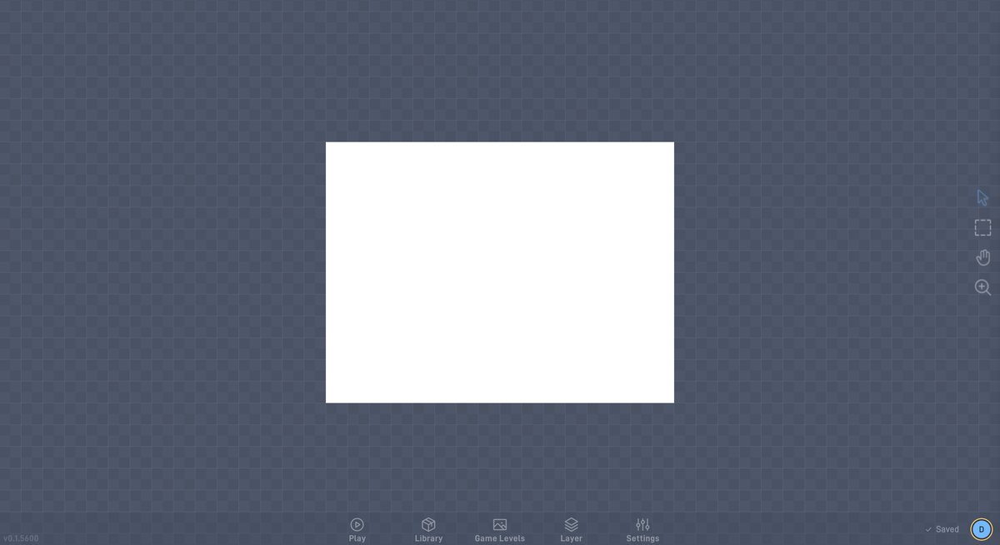
O clipe repete sozinho. Repare onde o cursor vai antes de clicar.
Foto da tela.
Clique na figura da esquerda, a do + grande.
Clique na figura, não no nome embaixo dela — o nome não responde.
- Abriu o Flowlab Tutorial
- Volte para My Games, apague esse jogo nos três pontinhos e comece de novo.
Pinte o céu de ESPAÇO

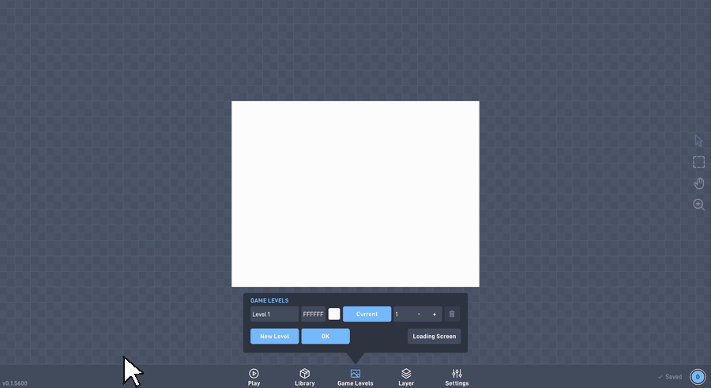
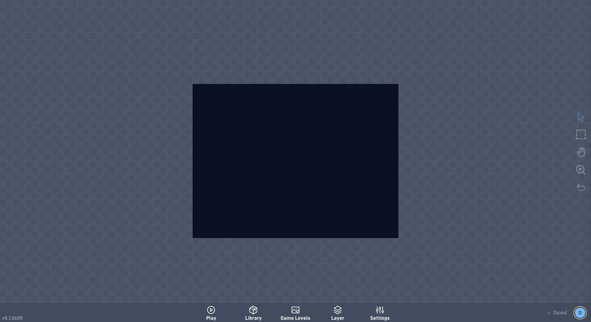
O clipe repete sozinho. Repare onde o cursor vai antes de clicar.
Foto da tela.
Hoje o jogo se passa no espaço, então o fundo é quase preto.
Clique em Game Levels, na fileira de baixo. Ao lado do nome Level 1 há um campo escrito FFFFFF — é a cor do fundo do seu jogo.
Clique nele, apague, escreva 0B1026 e aperte Enter. O fundo vira azul quase preto.
São seis letras e números que o computador lê como uma cor. O escuro aqui não é enfeite: é ele que faz o tiro aparecer de longe.
- O campo não aceita o que eu escrevo
- Apague as seis letras antigas primeiro, escreva as seis novas e aperte Enter. Sem o Enter ele volta para a cor de antes.
- Ficou de uma cor errada
- Confira letra por letra: é 0B1026 — zero, B, um, zero, dois, seis.
Crie a nave
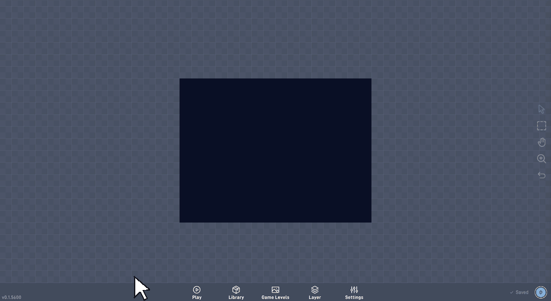
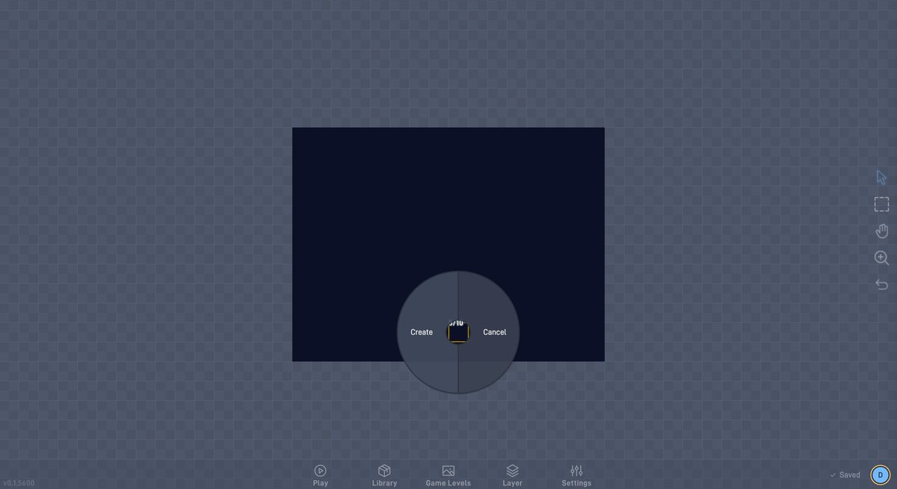
O clipe repete sozinho. Repare onde o cursor vai antes de clicar.
Foto da tela.
Clique uma vez dentro da folha escura, na parte de baixo, no meio — é de lá que a nave vai atirar para cima.
Abre a roda com Create e Cancel.
- Apareceu Clone, Edit, Delete
- Aquela casa já tem um objeto. Clique em Cancel e escolha uma casa vazia.
Escolha CREATE
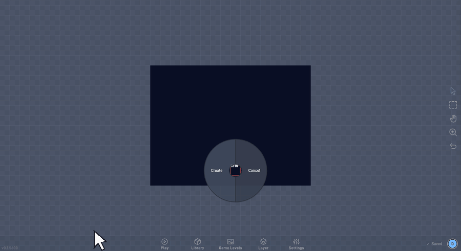
O clipe repete sozinho. Repare onde o cursor vai antes de clicar.
Foto da tela.
Na roda, clique em Create, em cima à direita.
Abre o painel do objeto novo, com edit sprite à esquerda e os campos Type e Name.
- Fechou tudo
- Você clicou em Cancel. Clique de novo na casa e escolha Create.
- A roda sumiu sozinha
- Clique de novo na mesma casa — ela ainda está vazia.
Escreva NAVE nos dois campos
Foto da tela.
No painel, clique no campo Name, apague o que estiver lá e escreva Nave.
Agora faça o mesmo no campo Type, do lado: apague e escreva Nave também.
Os dois parecem a mesma coisa e não são. O Name é o apelido daquela peça. O Type é a família dela — e é a família que aparece na lista quando um bloco precisar perguntar «bati em quem?». Hoje isso vai importar duas vezes.
- Escrevi e voltou o nome antigo
- Clique duas vezes no campo para marcar tudo antes de escrever.
- O painel fechou
- Clique de novo na casa da nave e escolha Edit.
Escolha o desenho da nave
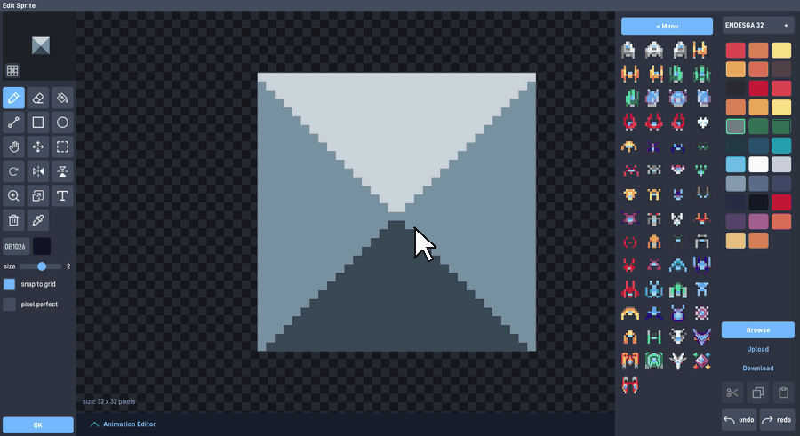
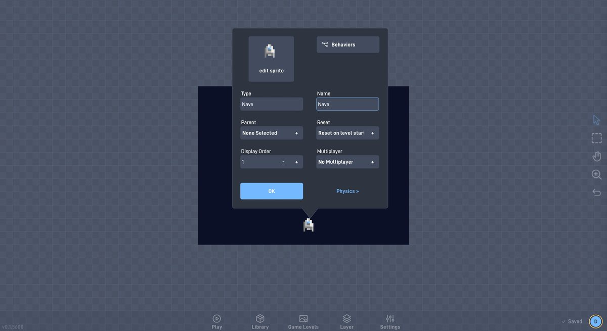
O clipe repete sozinho. Repare onde o cursor vai antes de clicar.
Foto da tela.
Clique no quadrado edit sprite, à esquerda do painel. Abre o editor de desenho.
1. Clique em Browse, embaixo da paleta de cores, à direita.
2. Se aparecer o botão azul < Menu no alto, clique nele para ver a lista de bibliotecas.
3. Clique em Gustavo Sprites — não em Flowlab Sprites, que é a das outras aulas. Esta tem naves.
4. Clique na faixa azul Ships. Aparece uma grade de naves.
5. Clique na primeira, no canto de cima à esquerda — a nave cinza.
Para fechar, clique em OK, no canto de baixo à esquerda.
Pode escolher outra nave se quiser. Só guarde qual: as figuras desta aula mostram a cinza.
- Não acho Gustavo Sprites
- Role a lista de bibliotecas. Se não houver lista nenhuma, clique no < Menu azul, no alto.
- A grade demora a aparecer
- Esta biblioteca é grande e vem da internet: pode levar uns vinte segundos. Espere antes de clicar de novo.
- Cliquei e não mudou nada
- Clique bem em cima da figura, não no espaço entre elas.
Tire a gravidade da nave
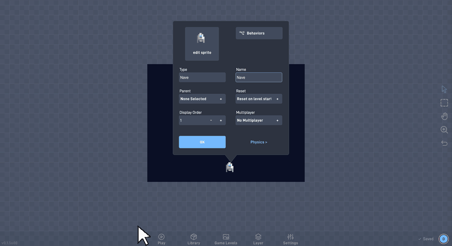
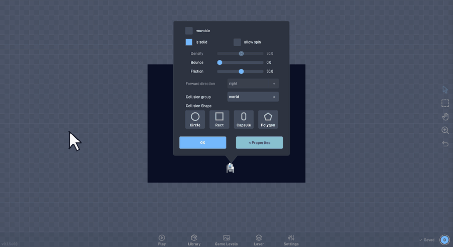
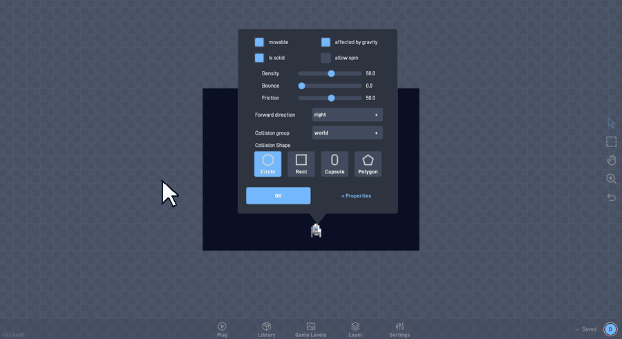
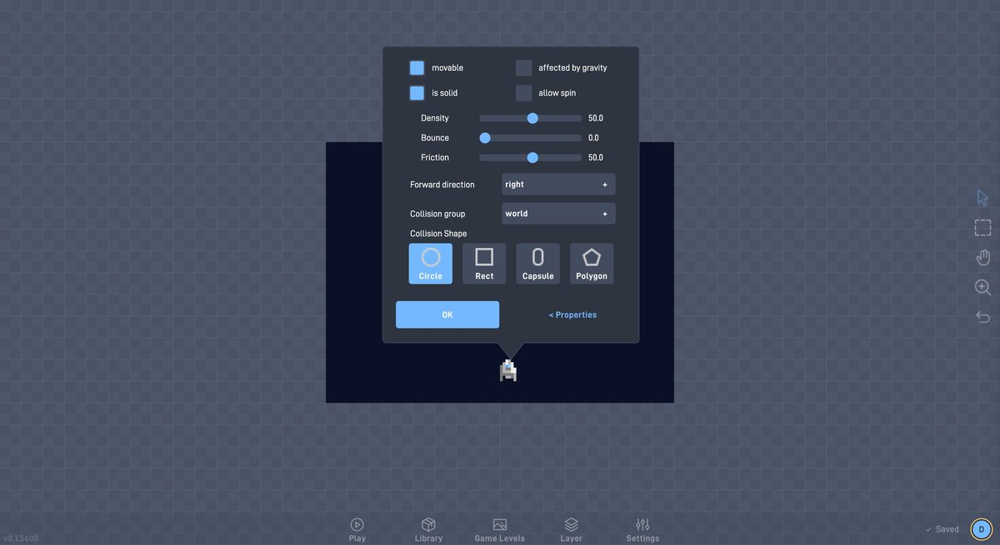
O clipe repete sozinho. Repare onde o cursor vai antes de clicar.
Foto da tela.
No painel da nave, clique em Physics >, no canto de baixo à direita.
Mexa em duas caixinhas:
1. movable — marque. Sem ela a nave fica pregada e nenhuma tecla a move.
2. affected by gravity — desmarque. No espaço não há chão: com gravidade a nave cai para fora da tela assim que o jogo começa.
Feche no OK azul.
- Não acho Physics
- Ele é um texto azul claro, pequeno, no canto de baixo à direita do painel.
- A nave cai quando eu jogo
- A gravidade continua marcada. Abra a física de novo e desmarque.
Faça a nave andar para a ESQUERDA
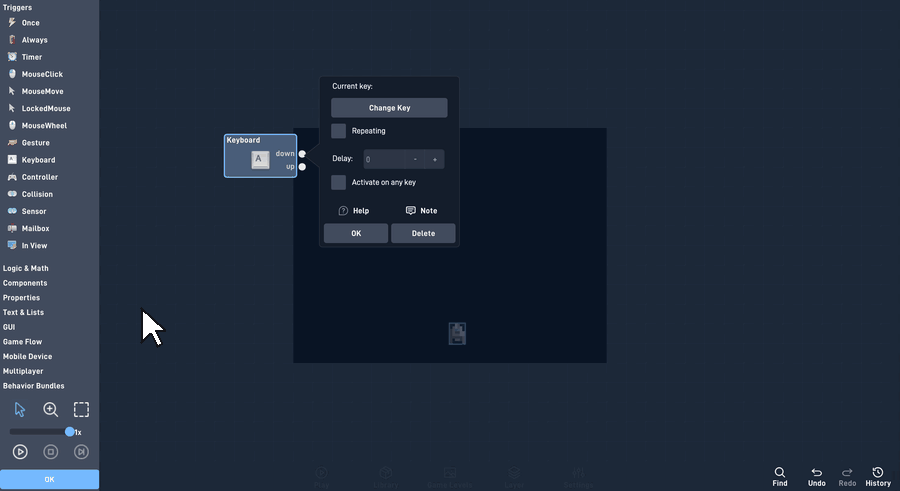
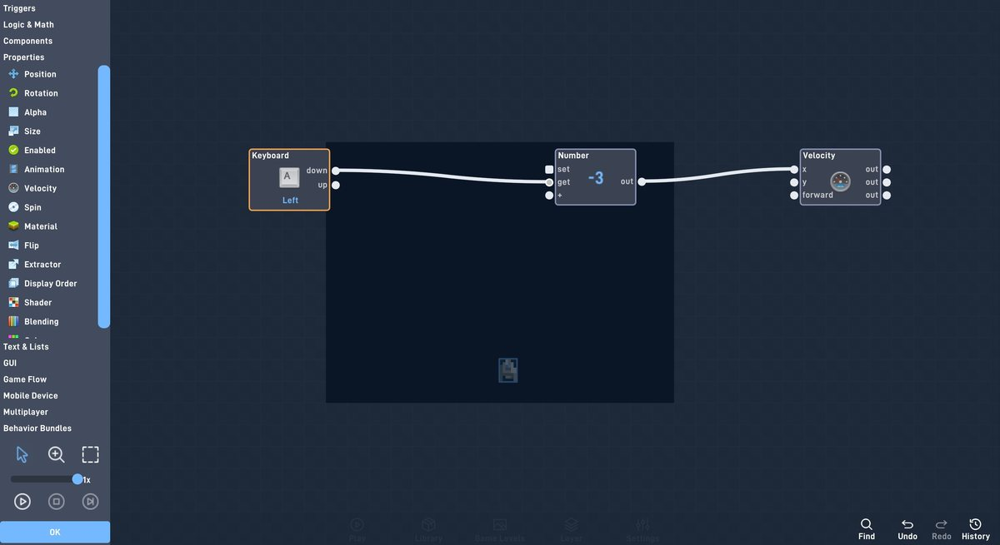
O clipe repete sozinho. Repare onde o cursor vai antes de clicar.
Foto da tela.
Feche a física no OK e clique em Behaviors. A mesa de blocos abre vazia.
Você já montou este trio na Aula 3, na lava: Number → Velocity. Hoje muda só quem manda e para que lado.
Arraste três blocos para a parte de cima da mesa, bem espalhados:
1. Em Triggers, o Keyboard — à esquerda.
2. Em Logic & Math, o Number — no meio.
3. Em Properties, o Velocity — à direita.
Agora a tecla: clique devagar em cima do Keyboard, clique em Change Key e aperte a seta ← do teclado. O campo Current key: passa a mostrar Left. Feche no OK.
Agora o número: clique devagar no Number e clique três vezes no botão −. Ele fica -3.
E os dois fios:
4. Da bolinha down do Keyboard até a bolinha get do Number.
5. Da bolinha out do Number até a bolinha x do Velocity — a primeira das três.
Lendo em voz alta: quando eu apertar a seta esquerda (Keyboard), pegue este número (Number) e use como velocidade para os lados (x).
- O Keyboard não mostra tecla nenhuma
- Ele nasce vazio, e vazio não dispara nunca — e o editor não avisa. Clique devagar nele, Change Key, e aperte a seta.
- O fio não gruda
- Solte os blocos mais LONGE uns dos outros e arraste devagar, de bolinha a bolinha.
- Liguei no y sem querer
- O y é o da lava da Aula 3: ele joga a nave para cima e para baixo. O certo é o x, a bolinha de cima.
- Não consigo pôr o menos
- Não digite o traço: o campo engole o sinal quando ele vem primeiro. Use o botão −, que tira 1 por clique.
Agora faça sozinho o lado DIREITO
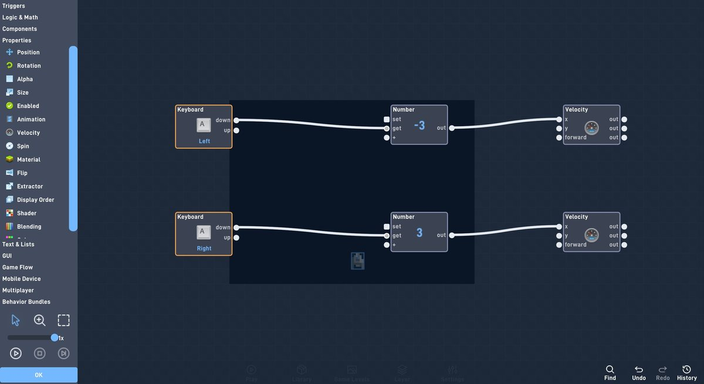
Foto da tela.
Monte o mesmo trio de novo, mais abaixo na mesa, com os mesmos três blocos: Keyboard em Triggers, Number em Logic & Math e Velocity em Properties. Espalhados, como os de cima.
Três mudanças:
1. No Keyboard, a tecla é a seta →. O campo passa a mostrar Right.
2. No Number, digite 3 — sem o botão −, porque agora o número é positivo.
3. Os fios são os mesmos: down → get, e out → x.
Por que um segundo Velocity, se já tem um? Porque cada bolinha de entrada aceita um fio só. Dois números não cabem no mesmo x.
Feche a mesa no OK, feche o painel e aperte Play.
Repare numa coisa: quando você solta a seta, a nave não para — ela continua deslizando. Não é defeito do seu jogo: no espaço não há chão nem ar para frear. Para voltar, aperte a outra seta.
- A nave sumiu pela beirada
- Ela não freia sozinha. Aperte a seta contrária e espere — ela volta.
- Só um lado funciona
- Confira a tecla daquele Keyboard e o sinal do número: esquerda é -3, direita é 3.
- Os blocos ficaram amontoados
- Arraste cada um para longe. Mesa apertada é fio que não gruda.
- A nave nem se mexe
- Volte ao passo 9: sem movable marcado, nenhuma força move a nave.
Crie o TIRO e deixe ele poder se mexer
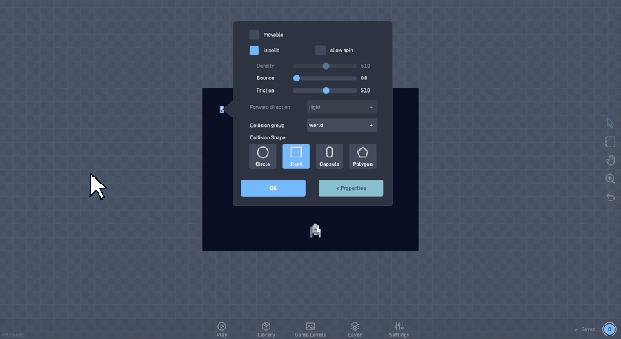
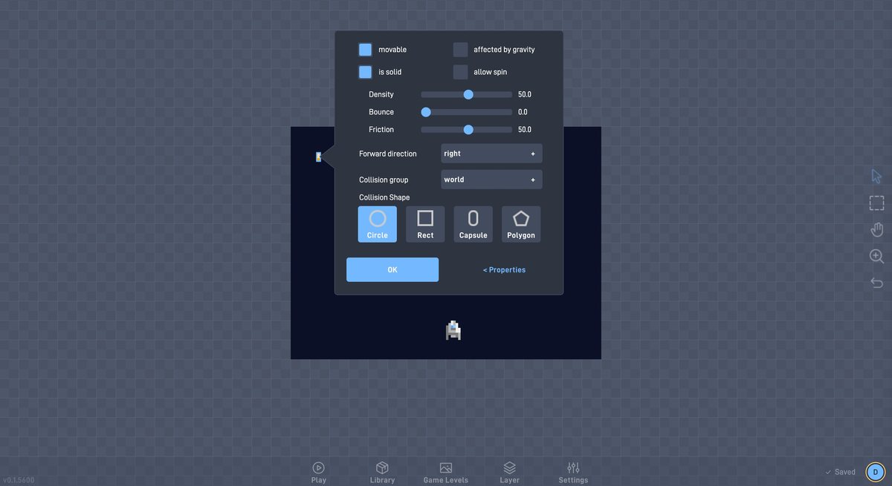
O clipe repete sozinho. Repare onde o cursor vai antes de clicar.
Foto da tela.
Feche as duas telas (o OK da mesa de blocos e o OK azul do painel).
Clique numa casa vazia no canto de cima à esquerda da folha e escolha Create.
Escreva Tiro nos dois campos, Name e Type. Em edit sprite, clique em Browse, depois em Gustavo Sprites e na faixa azul Projectiles. Escolha uma figura pequena e comprida — ela vai ser o tiro. Feche no OK.
Esta peça fica aí parada no canto e não é o tiro do jogo. Ela existe só para o computador saber como é um tiro: na hora de atirar, ele faz uma cópia dela.
Antes de fechar, clique em Physics >, no canto de baixo à direita do painel, e mexa em duas caixinhas:
1. movable — marque.
2. affected by gravity — desmarque.
Essa primeira caixinha é a mais importante do curso inteiro, e ela já apareceu três vezes: o boneco que não pulava, a lava que não subia e agora o tiro. Sem movable, empurrão nenhum funciona: o computador trata a peça como se fosse parede. Com ela marcada, o tiro sai voando.
Feche no OK azul.
- Coloquei no lugar errado
- Clique nela, escolha Delete e faça de novo numa casa do canto.
- Ela aparece no jogo
- Tudo bem: ela fica lá parada. Mais para frente dá para escondê-la.
- O tiro aparece e fica parado
- É exatamente isto: falta movable. Abra a física do Tiro e marque.
- O tiro cai em vez de subir
- A gravidade está marcada. Abra a física do Tiro e desmarque.
Ponha o EMISSOR na nave
Foto da tela.
Feche as duas telas e clique na nave, em baixo. Escolha Edit e depois Behaviors.
Na coluna da esquerda clique em Components e arraste o Emit para a mesa.
Repare numa coisa: na coluna ele se chama Emit, mas depois de solto, na mesa, o título dele é Emitter. É a mesma peça.
- Não acho o Emit
- Ele está em Components, logo abaixo de Sound.
- Arrastei e não caiu
- Solte no meio da mesa, longe da beirada.
Diga ao emissor o que atirar e para onde
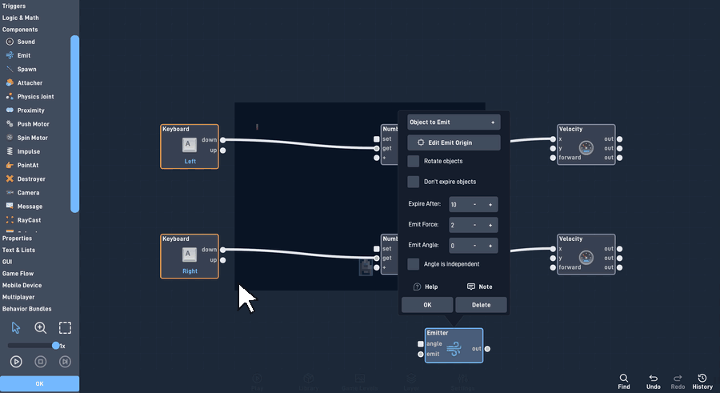
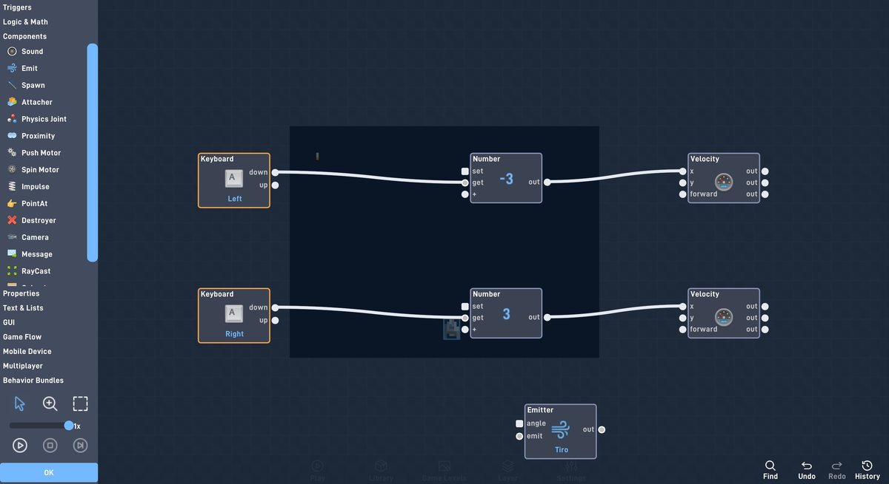
O clipe repete sozinho. Repare onde o cursor vai antes de clicar.
Foto da tela.
Clique devagar em cima do Emitter, segurando um instante, até abrir a janelinha de ajustes.
Mexa em três coisas:
1. Object to Emit — clique e escolha Tiro.
2. Emit Angle — escreva 270. Zero é para a direita e os números giram no sentido do relógio, então 270 é para cima.
3. Expire After — escreva 90. Esse número é em trinta avos de segundo: 90 dá três segundos. O padrão é 10, que são três décimos — o tiro sumiria antes de você ver.
Feche no OK.
- A janelinha não abre
- Clique devagar: aperte e segure um instante antes de soltar. Clique rápido só seleciona o bloco.
- O tiro sai para baixo
- O ângulo ficou 90. Troque para 270.
- O tiro some num piscar
- O Expire After ficou pequeno. Escreva 90.
Ligue a tecla ESPAÇO ao emissor
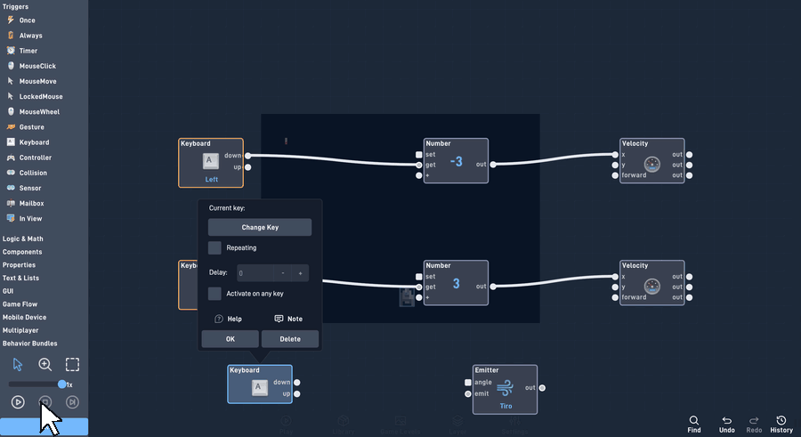
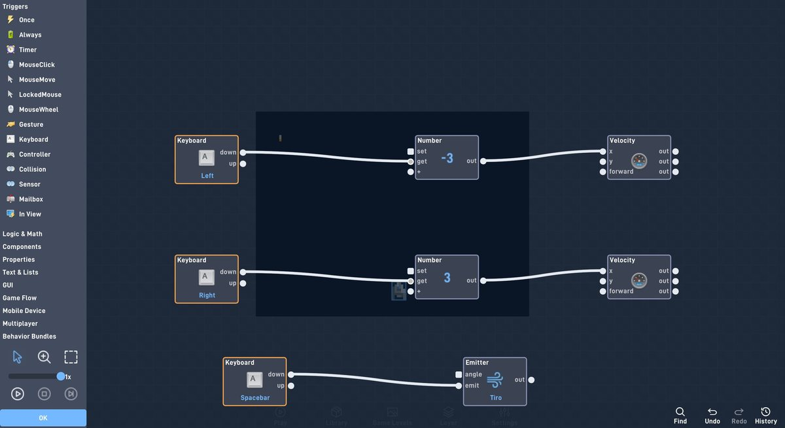
O clipe repete sozinho. Repare onde o cursor vai antes de clicar.
Foto da tela.
Na coluna da esquerda, em Triggers, arraste o Keyboard para a mesa, à esquerda do Emitter.
Ele nasce sem tecla nenhuma: onde diz Current key: não há nada escrito. Clique devagar nele para abrir os ajustes, clique no botão Change Key e então aperte a barra de espaço. Agora lê Current key: Spacebar. Feche no OK.
Agora o fio: arraste da bolinha down do Keyboard até a bolinha emit do Emitter.
Lido em voz alta: quando a barra de espaço descer, emita um tiro.
- O fio não fica
- Comece o arrasto bem em cima da bolinha, não no texto ao lado dela.
- Apertei a tecla e não mudou
- Clique no Change Key primeiro; só depois aperte a tecla.
Jogue e atire
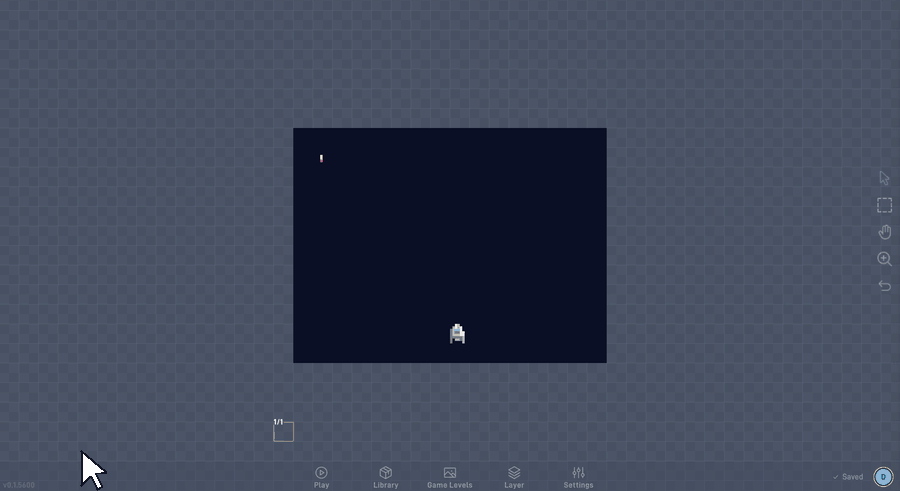
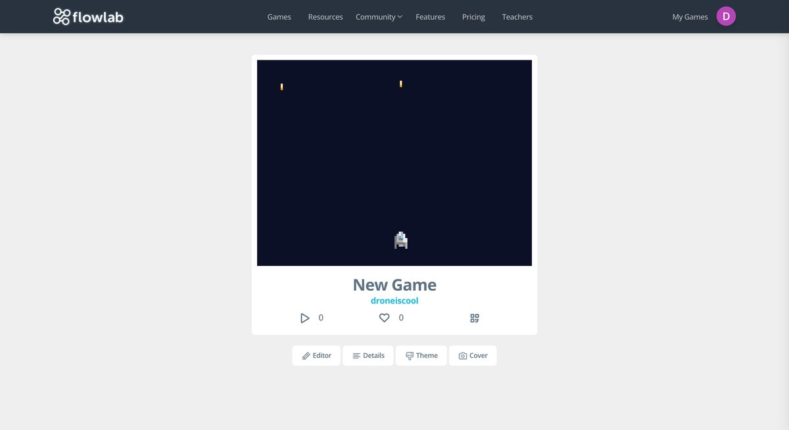
O clipe repete sozinho. Repare onde o cursor vai antes de clicar.
Foto da tela.
Feche as duas telas e clique em Play, na fileira de baixo.
Clique uma vez dentro do jogo para ele ouvir o teclado. Mova a nave com as setas e aperte a barra de espaço.
Um tiro sai da nave e sobe. Depois de três segundos ele some sozinho — foi o Expire After que mandou.
- Aperto espaço e não sai nada
- Clique uma vez dentro do jogo antes de apertar. Sem o clique, as teclas vão para a página e não para o jogo.
- O tiro nasce e fica parado
- Falta o movable do Tiro, do passo 12.
- O tiro desce
- O ângulo do emissor ficou 90. Volte e escreva 270.
Crie o INIMIGO
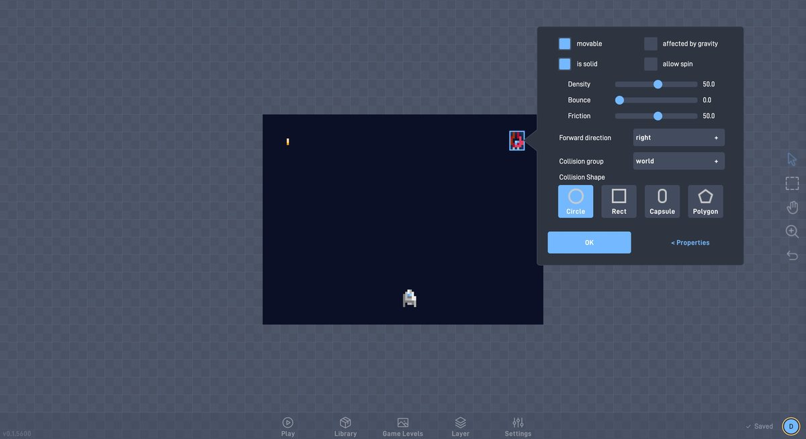
Foto da tela.
Volte ao editor pelo botão Editor, embaixo do jogo.
Clique numa casa vazia no canto de cima à direita e escolha Create. Escreva Inimigo nos dois campos. Em edit sprite, pelo Browse, volte em Gustavo Sprites › Ships e pegue uma nave vermelha — de outra cor que a sua, para você não confundir as duas no meio do jogo.
Em Physics >, marque movable e desmarque affected by gravity — igual à nave e ao tiro.
Esta peça também fica parada no canto: ela é o molde do inimigo, não o inimigo do jogo.
- Esqueci de escrever o Type
- Clique nela, escolha Edit e escreva Inimigo também no Type. Sem isso o passo 20 não acha a família certa.
Crie o CANHÃO lá em cima
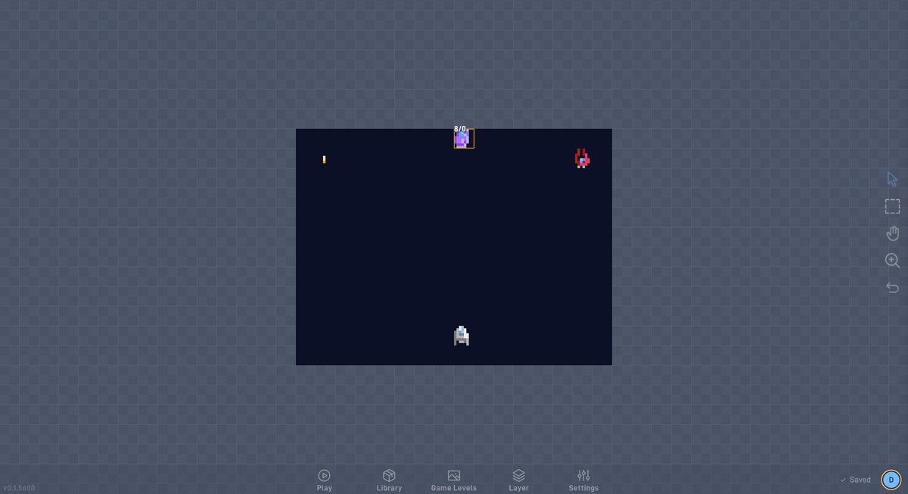
Foto da tela.
Clique numa casa vazia no alto da folha, no meio, e escolha Create.
Escreva Canhao nos dois campos. Em edit sprite, pelo Browse, em Gustavo Sprites › Ships, escolha uma nave de uma terceira cor — nas figuras desta aula ela é roxa.
Não mexa na física dele: o canhão fica parado de propósito. Ele não atira em você — ele solta os inimigos.
- Coloquei muito perto da nave
- Clique nele, escolha Delete e ponha na primeira fileira de cima.
O canhão solta inimigos sozinho
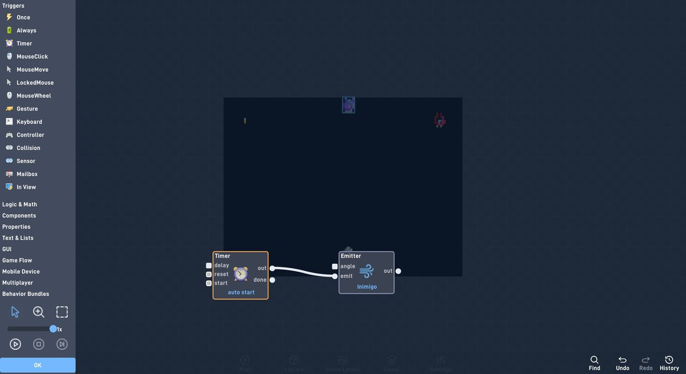
Foto da tela.
Com o canhão aberto, clique em Behaviors.
Em Components, arraste um Emit para a mesa. Clique devagar nele e ajuste: Object to Emit = Inimigo, Emit Angle = 90 (para baixo), Expire After = 150.
Em Triggers, arraste um Timer para a esquerda dele. Clique devagar no Timer e marque Repeat Forever.
Ligue a bolinha out do Timer na bolinha emit do Emitter.
É o mesmo bloco do seu tiro, apontado para o outro lado — e quem aperta a tecla agora é o relógio.
- Só desce um inimigo
- Faltou marcar Repeat Forever no Timer.
- Vêm inimigos demais
- Aumente o Delay do Timer: ele é em décimos de segundo, então 20 dá dois segundos.
- Os inimigos sobem
- O ângulo do emissor do canhão ficou 270. Troque para 90.
O tiro destrói o inimigo
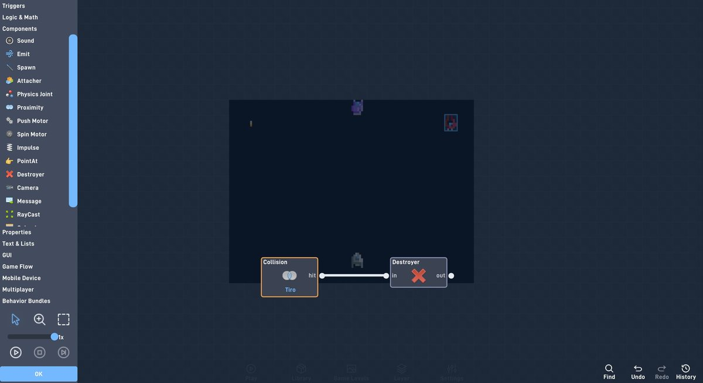
Foto da tela.
Feche as duas telas e clique no Inimigo do canto, aquele que ficou parado. Escolha Edit e depois Behaviors.
Em Triggers, arraste um Collision para a mesa. Clique devagar nele e escolha Tiro na lista — é aqui que o Type do passo 12 trabalha.
Em Components, arraste um Destroyer para a direita dele e ligue hit em in.
Você escreveu nos blocos o que já tinha escrito em português: quando um Tiro bater em mim, me destrua. E como o molde manda nas cópias, isso vale para todos os inimigos que o canhão soltar.
- A lista do Collision só mostra New Type
- Falta o Type do Tiro. Volte ao passo 12 e escreva Tiro também no campo Type.
- O tiro atravessa o inimigo
- O Collision ficou em Any Type ou numa família errada. Clique devagar nele e escolha Tiro.
Jogue e mande o link
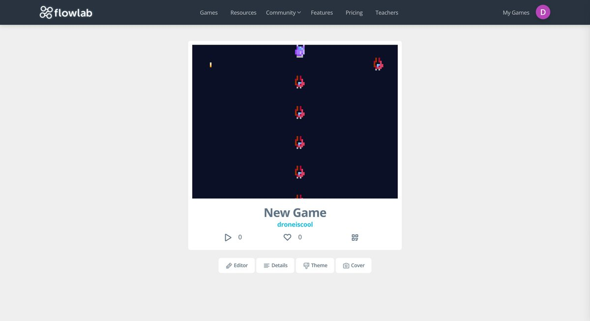
Foto da tela.
Feche as duas telas e clique em Play.
Clique uma vez dentro do jogo, mova a nave com as setas e atire com a barra de espaço. Os inimigos descem sozinhos e somem quando o seu tiro acerta.
Para mandar para alguém: copie o endereço que está na barra do navegador e mande. Quem abrir já joga, sem instalar nada.
- Os inimigos não somem
- Confira o passo 20: o Collision tem de estar em Tiro, e o fio tem de ir de hit até in.
- Nenhum inimigo aparece
- Volte ao passo 19 e confira se o Timer está com Repeat Forever marcado.
- A nave não anda
- Clique uma vez dentro do jogo antes de usar as setas.